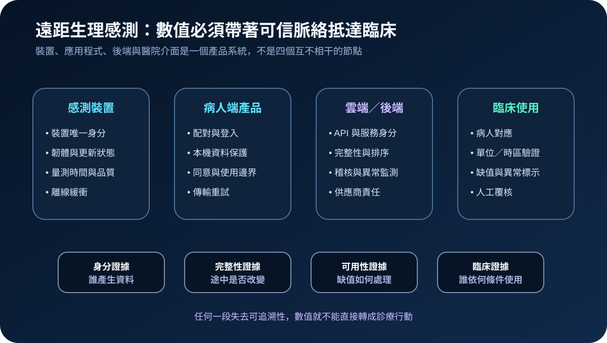
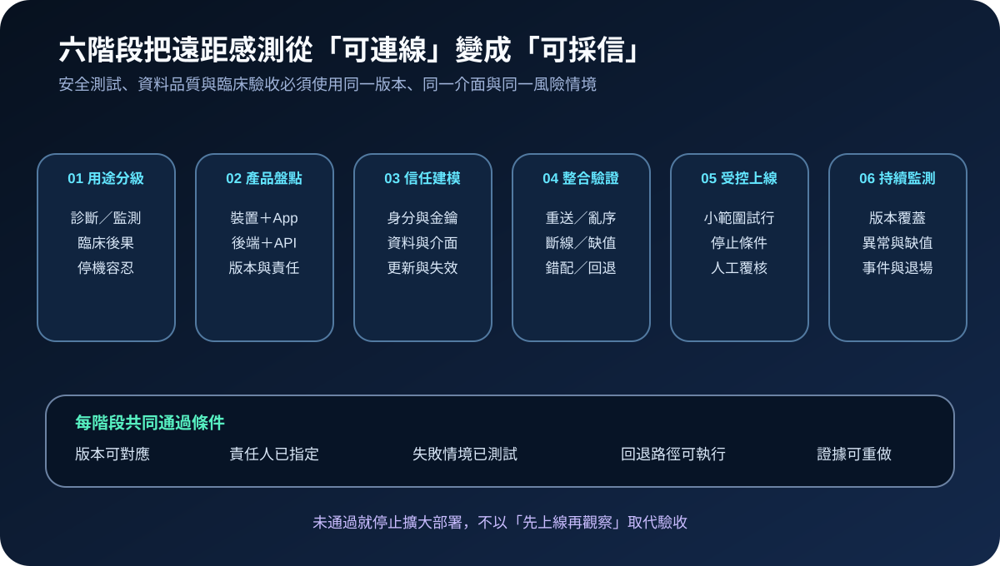
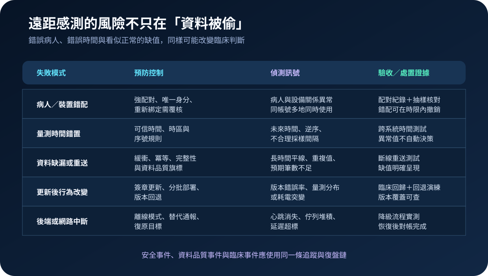

醫療資安國際觀察 · 2026-09-26
遠距生理感測如何建立可信資料鏈：從裝置身分到臨床覆核
作者：Dr. William｜醫療資訊與資安治理實務工作者
遠距感測值要進入診療流程，不能只確認裝置有連線。裝置身分、病人配對、量測時間、傳輸完整性、後端版本、缺值呈現與人工覆核，必須連成一條可追溯、可測試、可中止的信任鏈。
名詞解釋：產品邊界大於單一感測器
感測型數位健康技術（sensor-based digital health technology, sDHT）使用感測器收集數位量測，可用於診斷、監測或協助治療；IoT 產品不只包含實體裝置，也可能包含行動應用、後端服務與其他必要元件；資料溯源用來回答資料由哪個裝置、哪位病人、哪個版本、何時及透過哪條路徑產生；臨床覆核則確認異常、缺值、延遲或版本變更不會直接被當成可靠診療依據。
國際現況與適用邊界
美國 FDA 公開的 sDHT 資料說明，已授權的感測型數位健康技術可在傳統就醫場所以外取得量測，應用包含睡眠呼吸中止、連續血糖、動態血壓、心律監測、脈搏血氧及胰島素輸注等場景。FDA 於 2026 年 2 月更新醫療器材資安上市前指引，要求受涵蓋的連網醫療器材提交弱點管理、更新能力、SBOM 與其他資安文件。
NIST 於 2026 年 8 月 31 日發布 IR 8259 Revision 1 初稿，明確區分 IoT 裝置與 IoT 產品：產品可能同時包含裝置、行動應用及後端，資安能力也應以產品結果評估。同期的 SP 800-213A Revision 1 前導初稿提供 IoT 產品資安需求輪廓與裁整方法，原始適用情境是美國聯邦資訊系統。
對台灣醫療機構的適用方式：FDA 文件與 NIST 草案可作為產品邊界、採購問項及驗收證據的技術參考，不是台灣醫院的直接法定義務。實際要求仍須依台灣法規、主管機關公告、醫療器材核准用途、契約責任及臨床風險決定。
規劃：先定義數值如何被使用
規劃應從用途與後果開始：資料是提供病人自我管理、醫事人員追蹤、警示分流，還是直接影響藥物與治療。範圍至少涵蓋裝置、韌體、病人端應用、帳號與配對、雲端後端、API、醫院介接、臨床顯示及供應商維運。責任需分配給臨床流程負責人、醫材或工程單位、資訊、資安、個資治理與供應商。驗收指標可包含裝置與病人配對正確率、時間同步偏差、缺值辨識率、版本覆蓋率、更新失敗率、異常告警處置時間、離線可運作時間及復原後對帳完成率。

實作：建立六階段驗收閉環
- 用途分級：定義資料用途、錯誤後果、停機容忍與必須人工確認的情境。
- 產品盤點：記錄裝置、應用、後端、API、版本、資料流、次處理者與責任邊界。
- 信任建模：設定唯一身分、安全配對、金鑰、介面存取、資料保護、更新與退場控制。
- 整合驗證：測試斷線、重送、亂序、時間漂移、病人錯配、缺值、版本不一致及後端中斷。
- 受控上線：先由小範圍與低風險情境試行，設定停止條件、替代流程、人工覆核與可驗證回退。
- 持續監測：追蹤版本覆蓋、更新失敗、資料延遲、缺值、配對異常、介面錯誤及事件復原證據。
風險：完整加密仍可能得到錯誤數值
常見失敗包括病人與裝置錯配、裝置時間或時區錯誤、斷線後資料重複、更新後量測行為改變，以及後端中斷卻未在臨床介面清楚標示。控制不能只停在傳輸加密；還要加入唯一身分、可信時間、冪等處理、資料品質旗標、版本回歸、離線模式、異常偵測與人工覆核。

可執行清單
- 裝置、應用、後端與醫院介面是否列在同一份產品及版本清冊？
- 每筆量測是否可追溯到病人、裝置、時間、版本與傳輸狀態？
- 病人錯配、斷線重送、亂序、時區錯誤與缺值是否完成實測？
- 更新前後是否執行量測、連線、電力、介面與臨床顯示回歸測試？
- 後端或網路中斷時，病人與醫事人員是否能辨識資料並非即時或完整？
- 異常數值是否有人工覆核、替代量測及停止自動處置的明確條件？
- 供應商是否提供弱點受理、更新期限、SBOM、事件通知及安全退場證據？
來源
- U.S. FDA｜Medical Devices that Incorporate Sensor-based Digital Health Technology（查閱：2026-09-26）
- U.S. FDA｜Cybersecurity in Medical Devices: Quality Management System Considerations and Content of Premarket Submissions（發布：2026-02；查閱：2026-09-26）
- NIST｜IR 8259 Revision 1 Initial Preliminary Draft, IoT Device Cybersecurity Capability Core Baseline（發布：2026-08-31；查閱：2026-09-26）
- NIST｜SP 800-213A Revision 1 Initial Preliminary Draft, IoT Product Cybersecurity Requirement Profile（發布：2026-08-31；查閱：2026-09-26）
內容說明
本文依健康台灣深耕計畫相關治理內容整理，並參考 FDA 與 NIST 公開資料，提出台灣醫療機構可採用的遠距感測產品盤點、資料溯源、整合測試、臨床覆核及持續監測方法；不把美國醫療器材要求、聯邦系統適用文件或公開草案視為台灣法定義務，也不取代主管機關公告、醫療器材核准用途、契約判讀、法律意見或個案臨床風險評估。